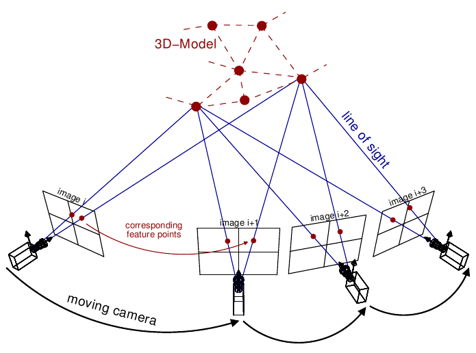
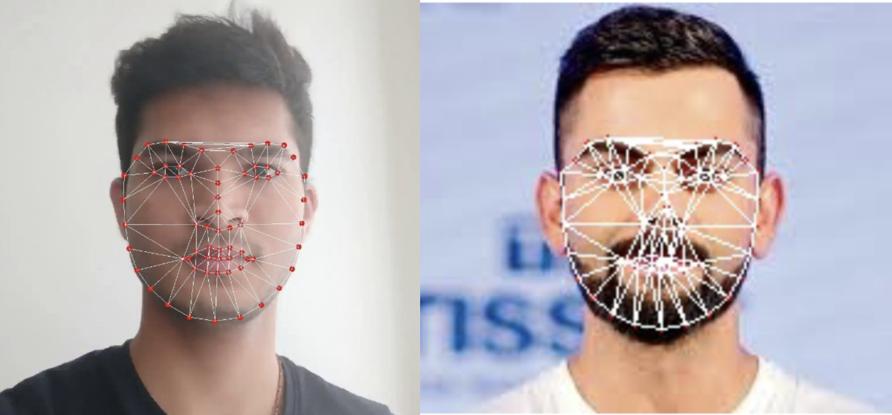
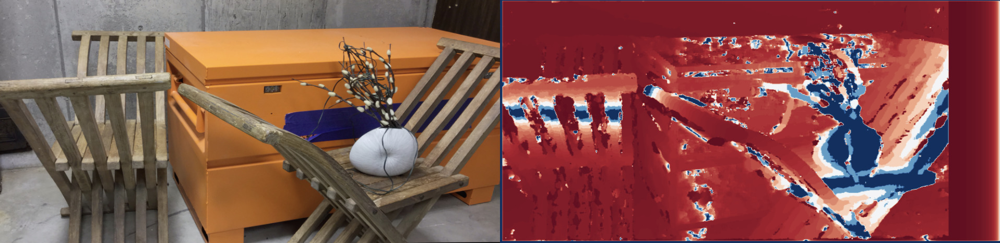
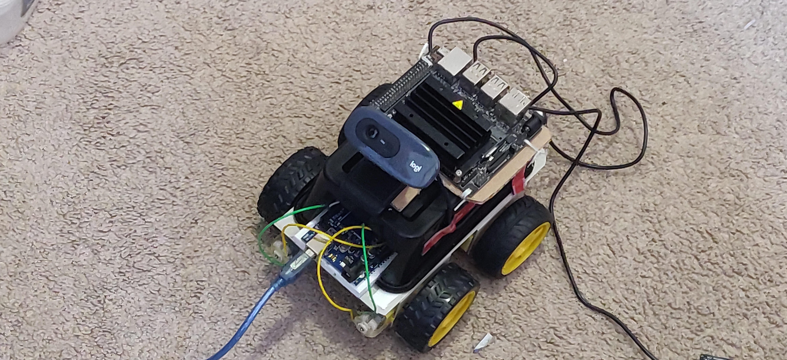
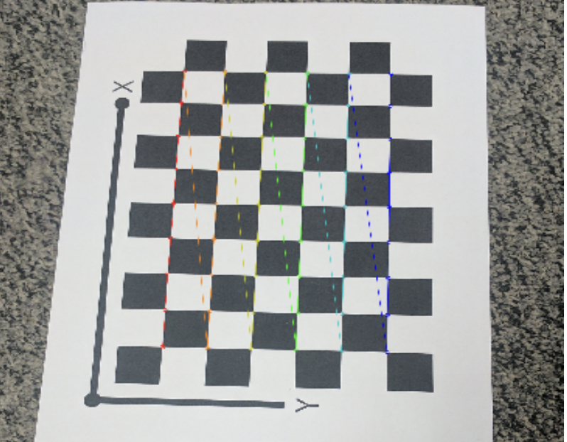
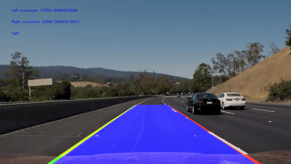
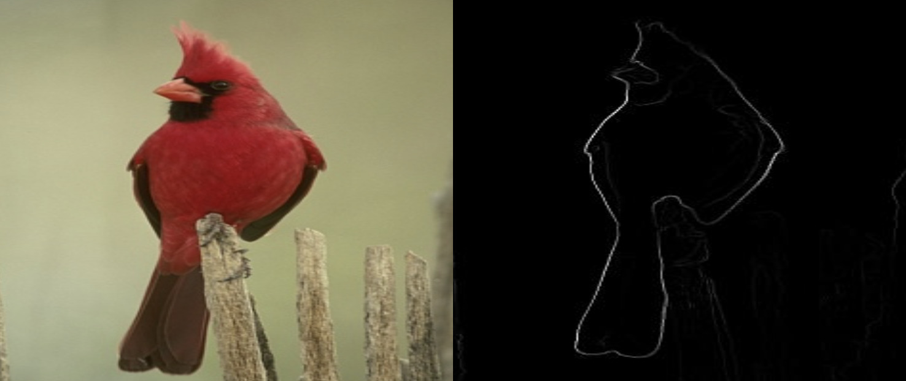
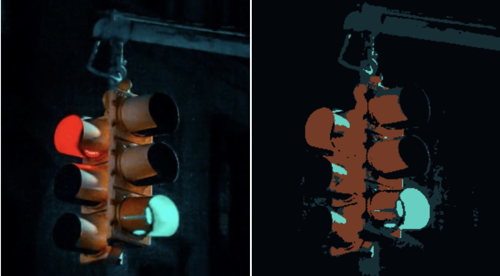

Structure from Motion (3D scene reconstruction)
Reconstructed a 3D scene and simultaneously obtained the camera poses of a monocular camera w.r.t. the given scene (multi-view geometry) by using traditional methods like Feature Matching and Outlier rejection using RANSAC, linear and non-linear triangulation, Perspective-n-Point and Bundle Adjustment in Python. Estimated depth and pose from a sequence of images by using an unsupervised learning method - SFM learner.

Face Swap

Swapped faces in a video using traditional (Delaunay Triangulation and Thin Plate Spline) and deep learning (Position Map Regression Network) methods
Depth estimation using Stereo Camera (depth from image)

Estimated pixel-wise depth by comparing the information about a scene from 2 vantage points and examining relative position of objects
Human pose Estimation using OpenPose

Implemented OpenPose to detect multi-person 2D human poses in real-time and used the detected poses to control the motion of a physical robot (built from scratch) using Jetson Nano and Arduino.
Zhang's Camera Calibration

Estimated the camera calibration matrix (K) using Zhang’s calibration method with non-linear optimization.
AR tag detection and Homography estimation.

Implemented an algorithm to detect and track a custom AR Tag, warped a custom image with inverse warping, and placed a 3D cube on it without using OpenCV library inbuilt functions.
Lane Detection and Turn prediction

Analyzed a video taken by a vehicle front camera and developed an algorithm to recognize the road lanes, the lane curvature and predict the turn.
Pb-Lite Edge detection algorithm.

Detected edges using probability of boundary detection algorithm by using DoG, Gabor, and LM filter banks.
K Means Image Segmentation.

Performed Image segmentation using K-Means clustering algorithm.